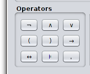
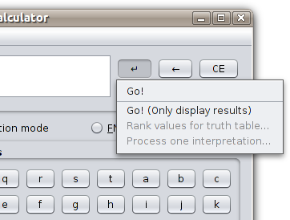
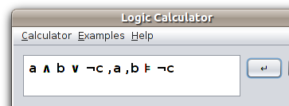
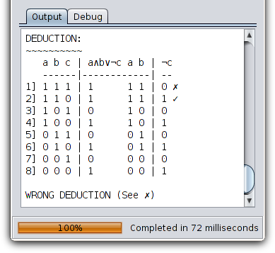

In Deduction mode we have avaliable all the operators to use:

Also we have the following options to process a given formula:

For example, given the formula:

Go option displays the truth table of all the formulae in the premises,
the truth table of the conclusion part, and the truth table of the overall deduction. The number
of models and the result of the deducion is also printed:

In case of Go (Only display result) option, Logic Calculator performs as in Basic mode.
Debug tab displays the same result as in Basic mode.